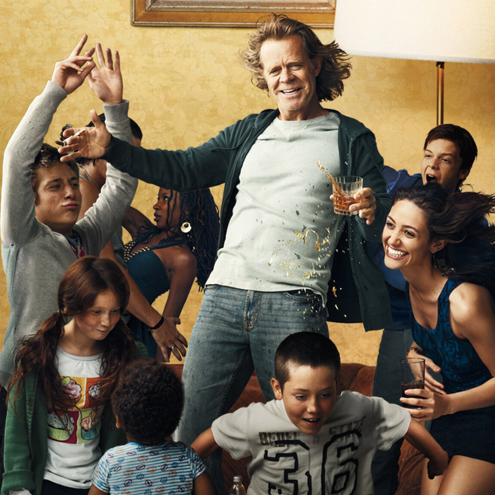

Shameless
Shameless es la historia de una familia desestructurada y al borde de la pobreza. El tono cómico y macarra de la serie oculta en un principio el auténtico drama de su realidad. Un padre alcohólico, una madre bipolar y seis hijos desamparados, mantenidos con lo poco que les puede ofrecer Fiona, la hermana mayor.